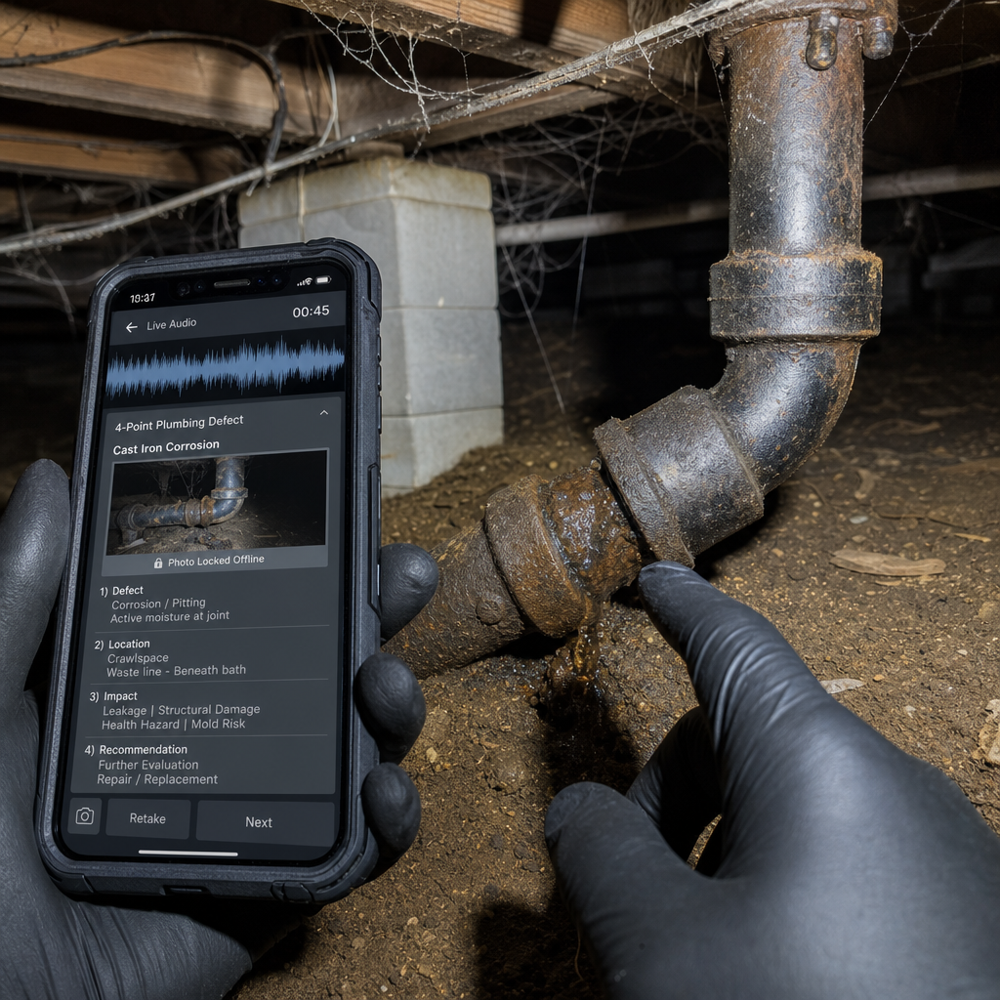
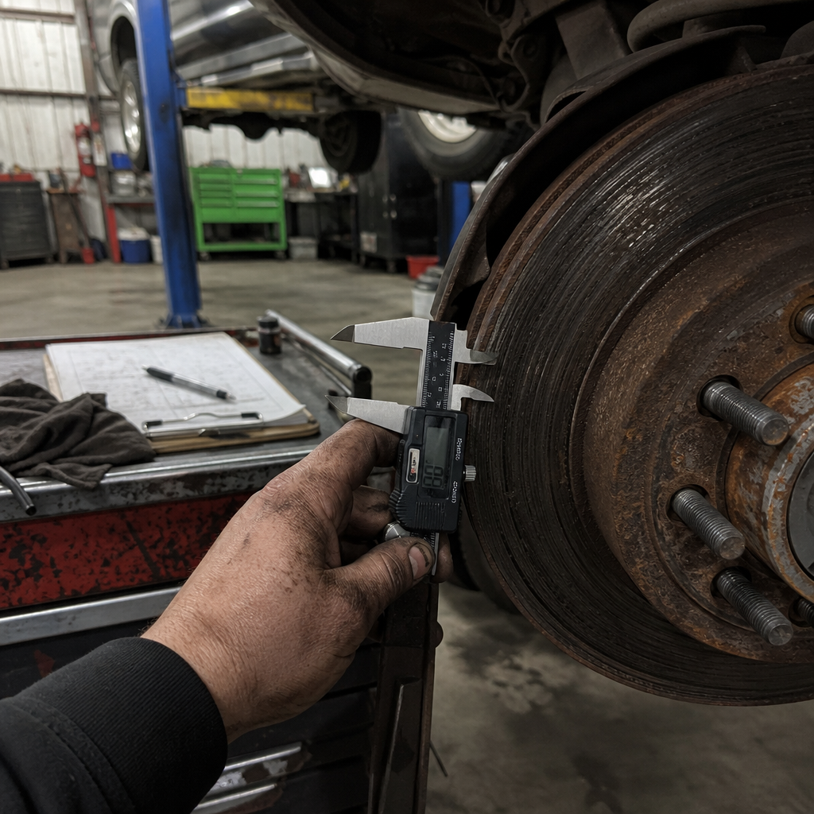

11 Mos Old · 0 to $1M Revenue · Hand-to-Hand Combat
1. Reddit Helpful Lead Magnet: Post free templates/checklists with zero promo links -> DM 100% of commenters.
2. In-App Rainbow Button: Direct calendar link offering 3 mos Pro Free for a 15-min feedback call (capped after 100 calls).
3. 30-Second Magic + Launch Every 2 Days + Clip Economy ($1/1K views).
1. The 'Unc Test': Can a stranger repeat back who pays you and why? Kill all "Physical AI" buzzwords.
2. Signal GTM: Google Ads ($450 -> $0) & LinkedIn Ads ($750 -> 0 clicks) failed. Reddit, IG DMs, TikTok, and Cold Email won.
3. Save Everything: Feed every call & DM into an objection matrix.

Raw Crawlspace Hook

Raw Auto Bay Hook
03 · OCT 26 TO NOV 8 (14-DAY) PRODUCTION READY
42 Posts
6 Raw Field Photos + 6 Video Scripts Ready
• 3 Content Archetypes: Type A (Helpful Playbook Lead Magnet), Type B (30-Sec Product Demo), Type C (Raw Founder Story).
• OpenAI gpt-image-2 Spend:$0.96 / $50.00 Cap (Zero-text authentic smartphone field photos).
1-Yr Viral Structure: 1) Specific hour/pain question in title ('Anyone else spending 1-2 hours every night...') -> 2) Raw 3-sentence story of CAT storm burnout/desk re Length: Title: 12-18 words; Body: 95-140 words; Media: Split photo of crumpled
Drop a messy photo of your roof/room notes or a 30-sec voice memo in DM - we will run it throug
SEGMENT
2. Home Inspectors & RV/Marine Inspectors
r/HomeInspections, InterNACHI Forum, Spectora User Group FB, NRVIA / RV Inspector groups
1-Yr Viral Structure: 1) Acknowledge checklist fatigue ('Stopping every 30 seconds to tap dropdowns breaks your flow') -> 2) Explicitly agree that AI writing full repo Length: Title: 10-16 words; Body: 110-160 words; Media: 15-sec POV video in cr
EXACT HOOK WORDS
inspection flow, 30-second tap stop, 4-Point form, Wind Mit, E&O insurance liability, defect co
FASTLANE LEAD MAGNET CTA
Send us 3 photos from your toughest crawlspace/roof today + a 20-sec voice note. We will return
SEGMENT
3. Auto Mechanics & Independent Shop Owners
r/MechanicAdvice, r/Justrolledintotheshop (pro threads),IATN, Tekmetric / AutoVitals FB groups
1-Yr Viral Structure: 1) Bay-floor frustration ('Flat-rate techs losing 45 mins/day typing 3-C notes with nitrile gloves') -> 2) 12-sec clip of pointing at leaking wat Length: Title: 9-14 words; Body: 80-120 words; Media: Raw vertical video (15-2
EXACT HOOK WORDS
3 Cs (Concern, Cause, Correction), flat-rate wrench time, service writer rewrite, DVI red/yello
FASTLANE LEAD MAGNET CTA
Reply with a 15-second voice memo of your worst RO diagnostic write-up today - we'll send back
SEGMENT
4. Handyman Owner-Operators & Small Remodelers
r/handyman, r/Contractor, r/Construction, ContractorTalk Forum, TreeBuzz, Local Trade FB Groups
1-Yr Viral Structure: 1) Sunday night kitchen-table confession ('pile of Home Depot receipts + terrible handwriting') OR CYA false-damage story ('client swore we scrat Length: Title: 11-17 words; Body: 90-135 words; Media: Photo of Sunday night r
Comment 'SUNDAY' or DM a photo of your scribbled job notes - we'll convert it into a clean clie
SEGMENT
5. Commercial MEP, HVAC, Septic & Chimney Pros
HVAC-Talk, ElectricianTalk, Pumper Magazine community, r/HVAC, r/electricians, National Chimney Sweep groups
1-Yr Viral Structure: 1) Dead-basement / mechanical room offline failure ('5G full bars and the app still crashes and wipes my quote') -> 2) 5 AM or 8 PM family tradeo Length: Title: 10-15 words; Body: 100-145 words; Media: Screen recording with
EXACT HOOK WORDS
dead basement signal, Airplane Mode lock, 8pm after kids go to bed, ServiceTitan freeze, chemic
FASTLANE LEAD MAGNET CTA
Test our Airplane-Mode build on your next basement or mechanical room job - if it ever drops a
6 Short-Form Video Scripts + Live POV Walkdown Demo.
LIVE POV VIDEO DEMO & CLIP ECONOMY ($1 / 1,000 VIEWS)
Real Hands-Free Field Capture → Structured Output
POV · MFG SKID
POV · MEP PANEL
POV · ASSEMBLY BENCH
POV · CONSTRUCTION WALK
Following Jock Ferguson's Fastlane Clip Economy playbook: chop every 45s field walkdown demo into 15-30s vertical clips distributed to creators at $1 per 1,000 verified US views.